import random
import math
import matplotlib.pyplot as plt
import copyLaboratório - Busca Adversarial e Minimax
Ajustando ambiente
Motivação
Buscas adversariais contemplam métodos que permitem o estudo de ambientes onde agentes possuem objetivos conflitantes. Para pesquisadores de IA, a natureza simplificada dos jogos (como xadrez, Go e pôquer) é uma grande vantagem, pois o estado do jogo é fácil de representar e os agentes são restritos a um número pequeno de ações com efeitos definidos por regras precisas. Ao contrário do caos das escaramuças do mundo real, os jogos oferecem um laboratório controlado para modelar agentes que tentam ativamente derrotar uns aos outros.
Em cenários modernos, as técnicas de busca adversarial e a teoria dos jogos expandiram-se para além dos tabuleiros, sendo fundamentais na análise de sistemas econômicos complexos, como leilões de direitos de exploração e definição de preços competitivos. No campo da segurança cibernética, esses métodos são aplicados para detectar comportamentos anômalos e modelar a proliferação de malwares, combatendo inclusive ataques de phishing e extorsão automatizados. A interação entre humanos e robôs em ambientes dinâmicos, como a negociação de manobras de ultrapassagem entre um carro autônomo e motoristas humanos, também é formulada através desses princípios estratégicos. Além disso, a aplicação em jogos de vídeo de larga escala, como StarCraft II, exige que os agentes lidem com observabilidade parcial e decisões em tempo real, aproximando-se da complexidade do mundo real. Por fim, a busca adversarial fornece a base matemática para os Jogos de Assistência, cruciais para o problema do alinhamento de valores, onde um agente deve agir em benefício de um humano mesmo sob incerteza sobre os objetivos reais desse usuário.
Métodos de Busca Adversarial
- Minimax: Um algoritmo para encontrar a jogada ideal em jogos determinísticos de informação perfeita.
- Poda Alpha-Beta (Alpha–Beta Pruning): Uma técnica que aumenta a eficiência da busca, ignorando partes da árvore que não influenciam a decisão final.
- Busca Heurística: Utilizada quando não há tempo para explorar a árvore até o fim, aplicando uma função de avaliação para estimar quem está vencendo.
- Monte Carlo Tree Search (MCTS): Uma estratégia que estima o valor de um estado através de médias de simulações (playouts) completas do jogo.
- Expectiminimax: Uma generalização do Minimax para jogos estocásticos que incluem elementos de sorte, como dados.
- Abordagens para Informação Imperfeita: Métodos que utilizam estados de crença para lidar com jogos onde nem todos os dados são visíveis para todos os jogadores (como pôquer ou Kriegspiel).
Objetivos de aprendizagem
- Modelar um jogo competitivo como um problema de busca, identificando estados, ações, resultados, testes terminais e funções de utilidade.
- Explicar o funcionamento do algoritmo Minimax, compreendendo como jogadores MAX e MIN alternam decisões para escolher movimentos ótimos.
- Simular partidas completas com Minimax, observando como a IA avalia estados futuros e por que o Jogo da Velha, com jogadores ótimos, tende ao empate.
- Comparar Minimax exaustivo e Poda Alpha-Beta, reconhecendo que a poda reduz o número de estados avaliados sem alterar a decisão ótima.
- Interpretar os valores de α e β durante a busca, entendendo como eles representam limites de decisão para MAX e MIN e quando permitem descartar ramos da árvore.
- Analisar o impacto da ordem das ações na eficiência da Poda Alpha-Beta, comparando execuções com ordem normal, reversa e embaralhada.
- Aplicar H-Minimax com limite de profundidade, entendendo por que jogos maiores exigem cortes na busca e avaliações aproximadas de estados não terminais.
- Construir e interpretar uma função heurística simples, baseada nos alinhamentos vencedores possíveis do tabuleiro.
- Reconhecer limitações da busca heurística, especialmente o efeito horizonte, quando uma ameaça importante fica além da profundidade analisada.
- Usar métricas de busca para avaliar desempenho, como número de nós visitados, testes terminais, profundidade máxima e quantidade de podas realizadas.
Fundamentação Teórica
Na unidade anterior, trabalhamos com agentes baseados em objetivos. Esse tipo de agente, simplesmente busca alcançar um estado que satisfaça uma condição de vitória ou meta, o que é análogo a problemas de planejamento onde o resultado desejado deve ser garantido independentemente das ações externas. A partir desse momento, iremos trabalhar com agentes baseados em utilidade. Agentes baseados em utilidade operam em ambientes competitivos onde existem múltiplos resultados possíveis com diferentes graus de “desejabilidade”. Nesses casos, a IA não busca apenas “chegar ao fim”, mas sim maximizar um valor numérico que representa seu desempenho. Dessa forma, o agente consegue distinguir entre uma vitória esmagadora, um empate ou uma derrota marginal, permitindo uma tomada de decisão mais refinada em jogos complexos.
Minimax
Como ja mencionado, um dos motores de busca tradicionais de busca competitiva esta associado ao algoritmo chamado Minimax. No Minimax, a função de utilidade (payoff) é o componente que define o valor numérico final para um jogador quando o jogo atinge um estado terminal. Ela mapeia o resultado do jogo (vitória, derrota ou empate) em um número real, permitindo que o algoritmo compare diferentes caminhos na árvore de jogo.
A árvore de jogo uma representação estruturada de todas as possibilidades de jogadas em uma partida, sobreposta ao grafo do espaço de estados. Cada nó da árvore representa um “estado” ou posição específica do jogo (como a configuração atual de peças em um tabuleiro). As arestas (ou ramos) que conectam esses nós representam os movimentos legais que um jogador pode realizar para transformar um estado em outro. A árvore é organizada em níveis que representam os turnos. Para jogos complexos como o xadrez, essa árvore é vasta (com mais de \(10^{40}\) nós), sendo considerada mais um construto teórico do que algo que possa ser totalmente realizado fisicamente
Em algoritmos de busca adversarial, como o Minimax, os jogos são definidos por componentes formais que caracterizam seu espaço de estados e mecânicas. Tradicionalmente, esses componentes são os seguintes:
- Estado Inicial (\(S_0\)): Especifica como o jogo está configurado em seu início.
- TO-MOVE(\(s\)): Identifica o jogador cuja vez é de realizar um movimento no estado \(s\).
- ACTIONS(\(s\)): Define o conjunto de movimentos legais ou ações que podem ser executadas em um determinado estado.
- RESULT(\(s, a\)): Representa o modelo de transição, que determina o novo estado resultante da aplicação da ação \(a\) no estado \(s\).
- IS-TERMINAL(\(s\)): O teste terminal, que retorna verdadeiro quando o jogo acabou e falso caso contrário.
- UTILITY(\(s, p\)): A função de utilidade (também conhecida como função de payoff), que define o valor numérico final para o jogador \(p\) quando o jogo termina em um estado terminal.
A integração desses elementos permite a construção da árvore de jogo (ver abaixo). O algoritmo Minimax utiliza essa árvore para determinar a decisão ótima, assumindo que todos os agentes jogam de forma ideal para maximizar seus próprios resultados.
O que seria uma decisão ótima para o Minimax?
Uma decisão ótima no algoritmo Minimax é a escolha de um movimento que garante a máxima utilidade para o jogador (MAX), partindo da premissa de que o oponente (MIN) também jogará de forma ideal para minimizar esse valor. Essa decisão é determinada pelo cálculo do valor Minimax de cada estado sucessor a partir do nó raiz, representando a utilidade de estar naquele estado assumindo que ambos os lados ajam perfeitamente até o fim do jogo. Formalmente, a decisão ótima é a ação que leva ao estado com o maior valor Minimax possível. O algoritmo assume um cenário de “pior caso” onde o adversário é implacável; se o oponente não jogar de forma ideal, o jogador MAX poderá obter um resultado ainda melhor do que o valor previsto pela decisão ótima, mas nunca pior.
Árvore de jogo
Abaixo, observe uma partida a apenas três movimentos do fim. Através desta simulação prática, podemos visualizar conceitos fundamentais como a construção da árvore de jogo: a) a definição de ply (turnos de decisão de cada jogador); b) a aplicação da função de utilidade e; c) o processo de retropropagação de valores, que permite ao algoritmo identificar a jogada que garante o melhor resultado possível, assumindo que ambos os lados joguem de forma ideal.
A árvore de jogos é a estrutura fundamental na busca adversarial. Ela serve como o modelo teórico sobre o qual operam algoritmos essenciais: o Minimax, que explora essa árvore para determinar a decisão ótima através de uma busca em profundidade; a Poda Alpha-Beta, que otimiza esse processo ao descartar ramos da árvore que comprovadamente não afetam a escolha final; e o Monte Carlo Tree Search (MCTS), que constrói e expande a árvore de forma seletiva por meio de simulações e cálculos de média de utilidade.
Implementação
A partir desse momento, traduzimos a estrutura lógica do jogo para ferramentas de manipulação de dados. Aqui construímos as funções utilitárias que permitem ao algoritmo “enxergar” o tabuleiro e “experimentar” movimentos. O roteiro seguirá estas etapas fundamentais: a) Modelo de Transição: Implementação das funções ACTIONS e RESULT para listar jogadas legais e gerar novos estados no tabuleiro; b) Avaliação de Resultados: Construção do teste terminal (IS-TERMINAL) e da função de utilidade (UTILITY) para identificar e pontuar o fim da partida; c) Busca e Decisão: Execução do algoritmo Minimax para explorar a árvore de jogo e retropropagar os valores das folhas até a raiz, definindo a estratégia ótima.
Instanciando ambiente do agente
def create_board():
"""Cria e retorna um tabuleiro de Tic-tac-toe 3x3 vazio."""
return [[None for col_idx in range(3)] for row_idx in range(3)]board_example = create_board()
for row in board_example:
print(row)[None, None, None]
[None, None, None]
[None, None, None]Função para visualizar o tabuleiro do Jogo da Velha
def draw_board(board, title="Tabuleiro"):
"""
Gera uma imagem do tabuleiro usando matplotlib.
"""
figure, axis = plt.subplots(figsize=(4, 4))
axis.set_xlim(0, 3)
axis.set_ylim(0, 3)
axis.set_xticks([])
axis.set_yticks([])
axis.set_title(title)
# Desenha as linhas do tabuleiro
for position in range(1, 3):
axis.plot([position, position], [0, 3], linewidth=2, color="black")
axis.plot([0, 3], [position, position], linewidth=2, color="black")
# Desenha X e O nas casas ocupadas
for row_idx in range(len(board)):
for col_idx in range(len(board[row_idx])):
cell = board[row_idx][col_idx]
if cell is not None:
x_position = col_idx + 0.5
y_position = 2.5 - row_idx
axis.text(
x_position,
y_position,
cell,
fontsize=40,
ha="center",
va="center"
)
plt.show()draw_board(board_example, title="1. create_board(): tabuleiro vazio")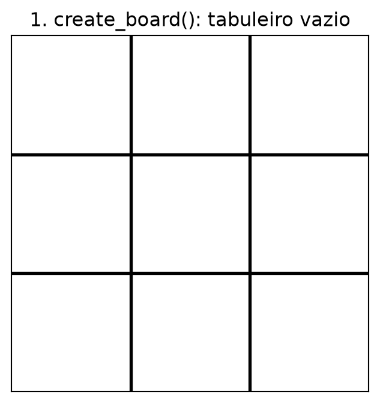
Função para ações validadas e movimentações
Abaixo, implementamos a mecânica de exploração do tabuleiro através de dois componentes fundamentais: o mapeamento de ACTIONS(s) e o modelo de transição RESULT(s, a).
def get_available_actions(board):
"""
Retorna todas as posições vazias do tabuleiro.
Cada ação é representada como uma tupla: (linha, coluna)
Esta função corresponde à ideia de ACTIONS(s).
"""
available_actions = []
for row_idx in range(len(board)):
for col_idx in range(len(board[row_idx])):
if board[row_idx][col_idx] is None:
action = (row_idx, col_idx)
available_actions.append(action)
return available_actionsdef apply_move(board, action, player):
"""
Aplica uma jogada no tabuleiro.
Esta função corresponde à ideia de RESULT(s, a)
"""
board[action[0]][action[1]] = playerdef undo_move(board, action, player = None):
"""
Desfaz uma jogada previamente aplicada.
Isso permite testar vários ramos da árvore de jogo usando o mesmo tabuleiro.
"""
board[action[0]][action[1]] = playerDemonstração
player, action = "X", (1, 1)
apply_move(board_example, action, player)draw_board(board_example, title="Max joga ao centro")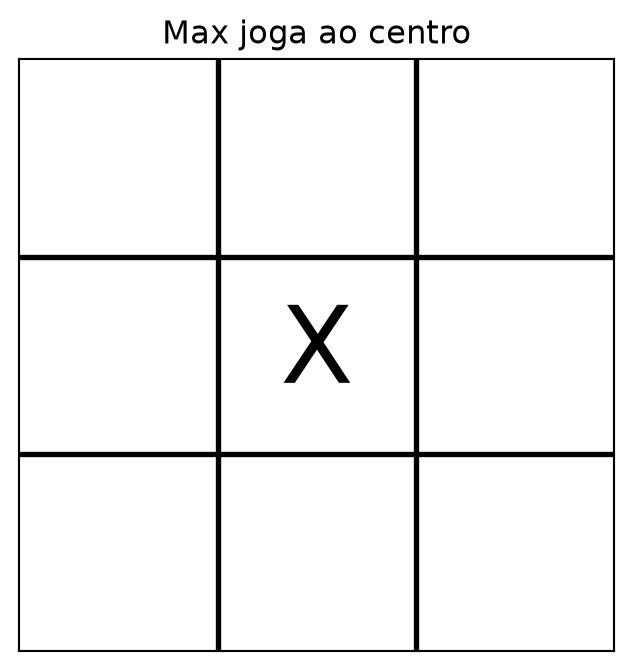
player, action = None, (1, 1)
undo_move(board_example, action)draw_board(board_example, title="Jogada desfeita")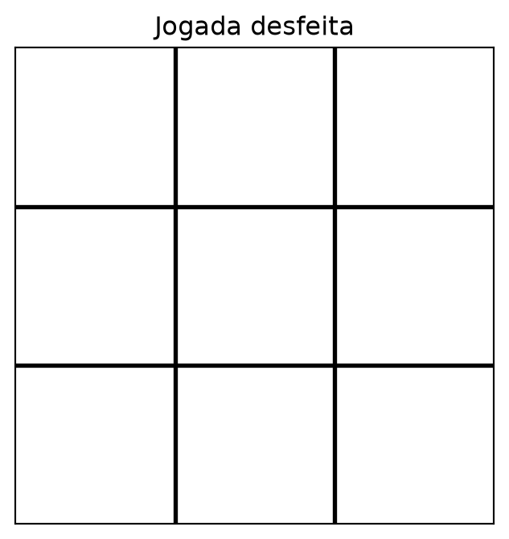
available_actions = get_available_actions(board_example)
print(f"Ações disponíveis: {available_actions}")Ações disponíveis: [(0, 0), (0, 1), (0, 2), (1, 0), (1, 1), (1, 2), (2, 0), (2, 1), (2, 2)]Função de utilidade e verificação de termino
A seguir, iremos implementar os componentes exigidos para representação de um algoritmo de busca adversarial, focando obviamente na estrutura do Minimax. Aqui, implementamos os componentes IS-TERMINAL e logo em seguida traduzimos a identidade do jogador no valor de UTILITY.
def utility(board):
"""
Converte o nome do jogador ('X' ou 'O') para seu valor de utilidade padrão.
'X' representa o jogador MAX (+1).
'O' representa o jogador MIN (-1).
"""
winner = check_winner(board)
if winner == "X":
return 1
if winner == "O":
return -1
return 0def check_winner(board):
"""
Verifica se há vencedor ou empate.
Retorna:
- "X" quando MAX vence;
- "O" quando MIN vence;
- "Empate" quando não há mais ações legais;
- None quando a partida ainda está em andamento.
"""
# Linhas
for row_idx in range(len(board)):
if board[row_idx][0] == board[row_idx][1] == board[row_idx][2] and board[row_idx][0] is not None:
return board[row_idx][0]
# Colunas
for col_idx in range(len(board[0])):
if board[0][col_idx] == board[1][col_idx] == board[2][col_idx] and board[0][col_idx] is not None:
return board[0][col_idx]
# Diagonais
if board[0][0] == board[1][1] == board[2][2] and board[0][0] is not None:
return board[0][0]
if board[0][2] == board[1][1] == board[2][0] and board[0][2] is not None:
return board[0][2]
if len(get_available_actions(board)) == 0:
return "Empate"
return None
def is_terminal(board):
"""Corresponde ao componente IS-TERMINAL(s)."""
return check_winner(board) is not NoneDemonstração
# Tabuleiro vazio (sem vencedor e não terminal)
board1 = [
[None, None, None],
[None, None, None],
[None, None, None]
]
winner1 = check_winner(board1)
draw_board(board1, title="Tabuleiro 1")
print(f"Vencedor obtido: {winner1}")
print(f"Estado terminal? {is_terminal(board1)}")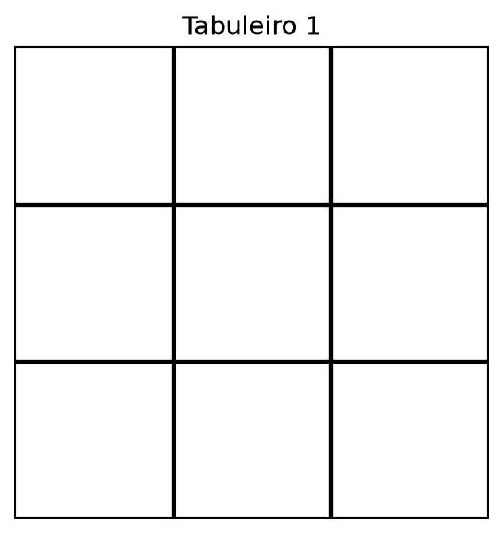
Vencedor obtido: None
Estado terminal? False# Vencedor na primeira linha (X)
board2 = [
['X', 'X', 'X'],
[None, 'O', None],
[None, None, 'O']
]
winner2 = check_winner(board2)
draw_board(board2, title="Tabuleiro 2")
print(f"Vencedor obtido: {winner2}")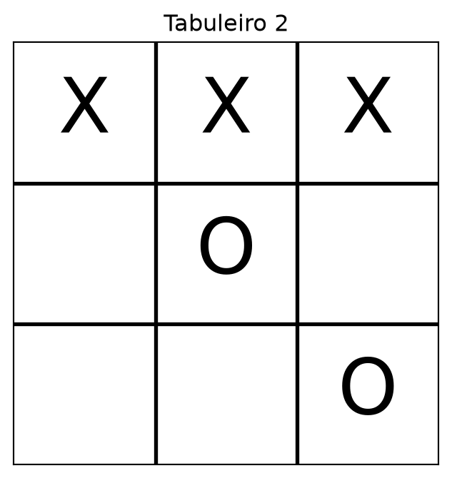
Vencedor obtido: X# Vencedor na segunda coluna (O)
board3 = [
['X', 'O', None],
[None, 'O', 'X'],
['X', 'O', None]
]
winner3 = check_winner(board3)
draw_board(board3, title="Tabuleiro 3")
print(f"Vencedor obtido: {winner3}")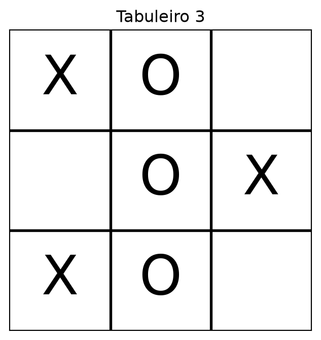
Vencedor obtido: O# Vencedor na diagonal principal (X)
board4 = [
['X', 'O', None],
[None, 'X', 'O'],
[None, None, 'X']
]
winner4 = check_winner(board4)
draw_board(board4, title="Tabuleiro 4")
print(f"Vencedor obtido: {winner4}")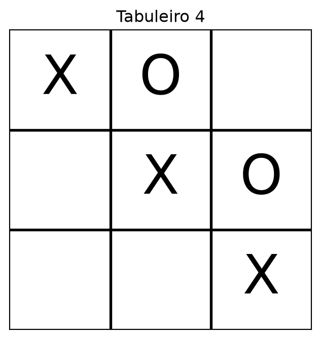
Vencedor obtido: X# Empate (sem vencedor)
board5 = [
['X', 'O', 'X'],
['O', 'X', 'O'],
['O', 'X', 'O']
]
winner6 = check_winner(board5)
draw_board(board5, title="Tabuleiro 5")
print(f"Vencedor obtido: {winner6}")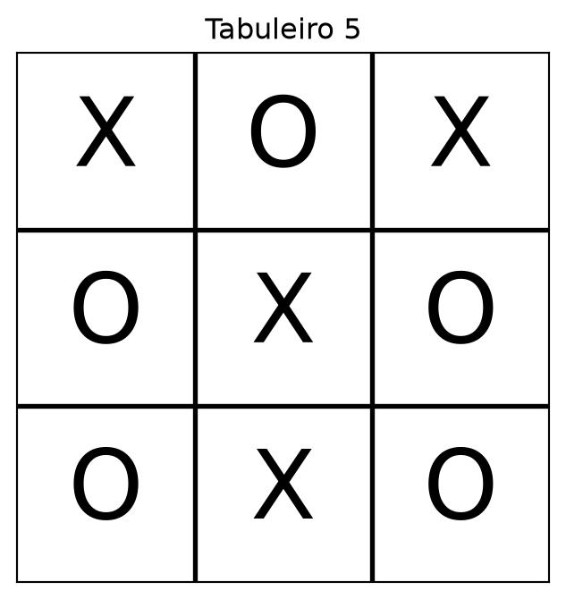
Vencedor obtido: EmpateMinimax
O algoritmo Minimax opera através de uma busca recursiva que simula o pensamento estratégico: “se eu jogar aqui, qual será a melhor resposta do meu oponente?”. As funções max_value e min_value implementam essa alternância de interesses, onde o algoritmo desce até os estados terminais para coletar a utilidade e, em seguida, propaga esses valores de volta para cima. Esse processo de retropropagação garante que o valor atribuído a cada movimento na raiz da árvore considere que ambos os jogadores farão as melhores escolhas possíveis em cada turno.
Função do MAX
def make_search_stats():
"""Cria o registro de métricas usado pelos algoritmos de busca."""
return {
"nodes": 0,
"terminal_tests": 0,
"max_depth": 0,
"prunes": 0,
"alpha_updates": 0,
"beta_updates": 0,
}
def update_stats(stats, depth):
"""Atualiza contadores comuns de visita a nós."""
if stats is not None:
stats["nodes"] += 1
stats["max_depth"] = max(stats["max_depth"], depth)
def register_terminal_test(stats):
if stats is not None:
stats["terminal_tests"] += 1
def print_search_stats(label, stats):
"""Imprime métricas de busca em formato compacto."""
print(f"{label}: nós={stats['nodes']}, testes terminais={stats['terminal_tests']}, profundidade máxima={stats['max_depth']}, podas={stats['prunes']}")
def max_value(board, stats=None, depth=0):
"""
Representa o turno de MAX, isto é, o jogador X.
MAX quer escolher a ação que produz o maior valor possível.
"""
update_stats(stats, depth)
register_terminal_test(stats)
if is_terminal(board):
return utility(board)
best_value = -math.inf
for action in get_available_actions(board):
apply_move(board, action, "X")
value = min_value(board, stats, depth + 1)
undo_move(board, action)
best_value = max(best_value, value)
return best_valueFunção do MIN
def min_value(board, stats=None, depth=0):
"""
Representa o turno de MIN, isto é, o jogador O.
MIN quer escolher a ação que produz o menor valor possível para MAX.
"""
update_stats(stats, depth)
register_terminal_test(stats)
if is_terminal(board):
return utility(board)
best_value = math.inf
for action in get_available_actions(board):
apply_move(board, action, "O")
value = max_value(board, stats, depth + 1)
undo_move(board, action)
best_value = min(best_value, value)
return best_valueFunção de decisão do agente
Diferente das funções recursivas que calculam o valor de estados futuros, a get_best_move é o ponto de decisão final do agente no nó raiz. Ela funciona como um coordenador que avalia todas as jogadas legais disponíveis no momento e, baseando-se nos resultados retornados pelo motor Minimax, seleciona a ação concreta que maximiza a utilidade para o jogador. É nesta etapa que o planejamento teórico se transforma em uma jogada real executada no tabuleiro.
def get_best_move(board, player, stats=None):
"""
Retorna a melhor jogada e seu valor Minimax para o jogador atual.
"""
available_actions = get_available_actions(board)
if not available_actions:
return None, utility(board)
if player == "X": # MAX
best_value = -math.inf
best_move = None
for action in available_actions:
apply_move(board, action, "X")
move_value = min_value(board, stats, depth=1)
undo_move(board, action)
if move_value > best_value:
best_value = move_value
best_move = action
return best_move, best_value
if player == "O": # MIN
best_value = math.inf
best_move = None
for action in available_actions:
apply_move(board, action, "O")
move_value = max_value(board, stats, depth=1)
undo_move(board, action)
if move_value < best_value:
best_value = move_value
best_move = action
return best_move, best_value
raise ValueError("O jogador deve ser 'X' ou 'O'.")Demonstração
board_max_to_win = [
["X", None, "O"],
[None, "O", None],
["X", "O", "X"]
]
draw_board(board_max_to_win, title="Tabuleiro vantajoso para Max")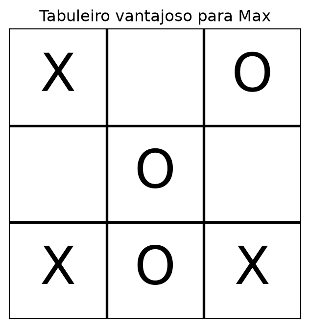
available_actions = get_available_actions(board_max_to_win)
print(available_actions)[(0, 1), (1, 0), (1, 2)]for action in available_actions:
print(f"Ação testada por X (MAX): {action}")
action_stats = make_search_stats()
apply_move(board_max_to_win, action, "X")
winner_after_move = check_winner(board_max_to_win)
action_value = min_value(board_max_to_win, action_stats, depth=1)
draw_board(board_max_to_win, title=f"Testando ação de X: {action}")
print(f"Vencedor após a ação: {winner_after_move}")
print(f"Valor Minimax da ação: {action_value}")
print_search_stats("Métricas da ação", action_stats)
undo_move(board_max_to_win, action)Ação testada por X (MAX): (0, 1)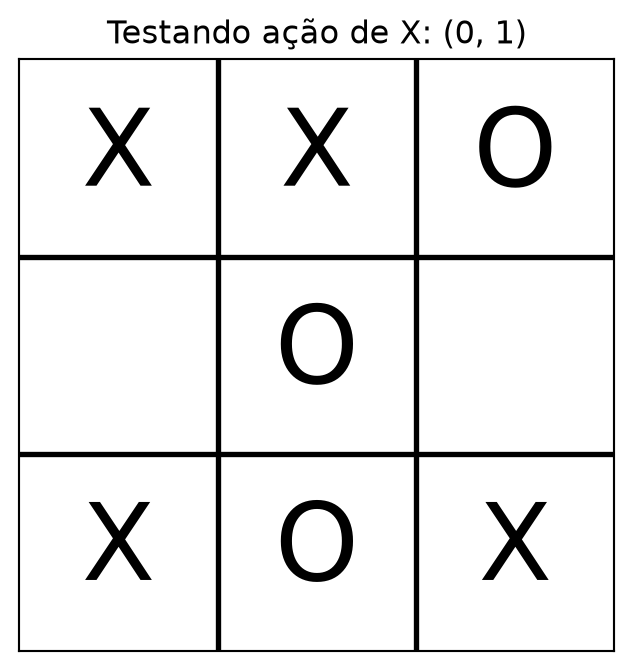
Vencedor após a ação: None
Valor Minimax da ação: 0
Métricas da ação: nós=5, testes terminais=5, profundidade máxima=3, podas=0
Ação testada por X (MAX): (1, 0)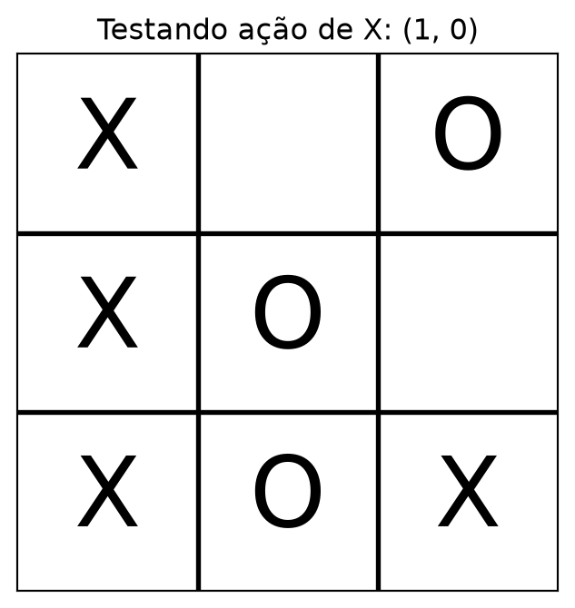
Vencedor após a ação: X
Valor Minimax da ação: 1
Métricas da ação: nós=1, testes terminais=1, profundidade máxima=1, podas=0
Ação testada por X (MAX): (1, 2)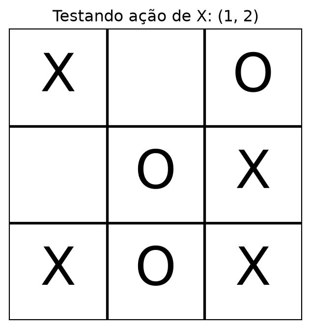
Vencedor após a ação: None
Valor Minimax da ação: -1
Métricas da ação: nós=4, testes terminais=4, profundidade máxima=3, podas=0decision_stats = make_search_stats()
best_move_for_max, best_value_for_max = get_best_move(board_max_to_win, "X", decision_stats)
apply_move(board_max_to_win, best_move_for_max, "X")
print(f"Melhor ação para X (MAX): {best_move_for_max}")
print(f"Valor Minimax da melhor ação: {best_value_for_max}")
print_search_stats("Métricas da decisão", decision_stats)Melhor ação para X (MAX): (1, 0)
Valor Minimax da melhor ação: 1
Métricas da decisão: nós=10, testes terminais=10, profundidade máxima=3, podas=0draw_board(board_max_to_win, title="Melhor jogada escolhida para Max")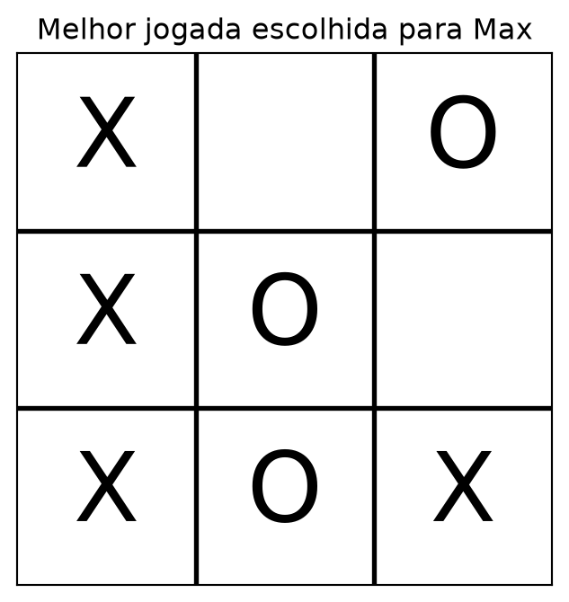
utility_value = utility(board_max_to_win)
print(f"Utilidade do estado: {utility_value}")
print("Interpretação: +1 significa vitória de X (MAX).")Utilidade do estado: 1
Interpretação: +1 significa vitória de X (MAX).Poda Alpha-Beta
A Poda Alpha-Beta mantém o mesmo valor ótimo do Minimax, mas carrega dois limites durante a recursão: α, o melhor valor já garantido para MAX, e β, o melhor valor já garantido para MIN. Quando um ramo não consegue superar esses limites, ele é descartado sem alterar a decisão final.
Ordenação das ações
def order_actions(actions, action_order="normal"):
"""Retorna ações em ordem normal, reversa ou embaralhada."""
ordered_actions = list(actions)
if action_order == "normal":
return ordered_actions
if action_order == "reversa":
return list(reversed(ordered_actions))
if action_order == "embaralhada":
random.shuffle(ordered_actions)
return ordered_actions
raise ValueError("Use action_order='normal', 'reversa' ou 'embaralhada'.")A função order_actions controla a sequência em que as jogadas legais são examinadas pela Poda Alpha-Beta. A opção normal mantém a ordem original produzida por get_available_actions, reversa percorre essa lista de trás para frente, e embaralhada usa uma ordem aleatória. A decisão ótima deve permanecer equivalente em uma busca completa, mas a quantidade de podas pode mudar bastante, porque encontrar boas alternativas cedo torna os limites α e β mais restritivos mais rapidamente.
Como o killer move acelera a Poda Alpha-Beta?
A técnica do killer move atua como uma estratégia de metaraciocínio que prioriza a análise de ações com alta probabilidade de sucesso, impactando a eficiência da IA da seguinte forma:
Ordenação de Ações: A eficácia da Poda Alpha-Beta depende da sequência em que as jogadas são examinadas. O killer move utiliza informações de buscas anteriores ou do aprofundamento iterativo para testar primeiro as melhores alternativas.
Restrição de Limites: Identificar boas jogadas precocemente permite atualizar os valores de α (melhor para MAX) e β (melhor para MIN) mais rápido, tornando-os mais restritivos e facilitando o descarte de sub-ramos irrelevantes.
Ganho de Desempenho: Com uma ordenação próxima da ideal, a complexidade de busca é reduzida para O(bm/2), o que permite ao agente explorar aproximadamente o dobro da profundidade em comparação ao Minimax exaustivo.
Memória de Busca: A heurística aproveita ameaças e respostas eficazes que persistem de turnos passados, evitando o reprocessamento desnecessário de ramos inferiores da árvore.
Demonstração
order_demo_board = [
["X", None, "O"],
[None, "O", None],
["X", None, None],
]
available_actions = get_available_actions(order_demo_board)
print(f"Ações originais: {available_actions}")
print(f"Ordem normal: {order_actions(available_actions, 'normal')}")
print(f"Ordem reversa: {order_actions(available_actions, 'reversa')}")
random.seed("demo-ordenacao")
print(f"Ordem embaralhada: {order_actions(available_actions, 'embaralhada')}")Ações originais: [(0, 1), (1, 0), (1, 2), (2, 1), (2, 2)]
Ordem normal: [(0, 1), (1, 0), (1, 2), (2, 1), (2, 2)]
Ordem reversa: [(2, 2), (2, 1), (1, 2), (1, 0), (0, 1)]
Ordem embaralhada: [(1, 2), (2, 2), (0, 1), (2, 1), (1, 0)]Função do MAX com Poda Alpha-Beta
def max_value_alpha_beta(board, alpha, beta, stats=None, depth=0, action_order="normal", verbose=False):
"""Valor de um estado em turno de MAX usando poda Alpha-Beta."""
update_stats(stats, depth)
register_terminal_test(stats)
indent = " " * depth
if verbose:
print(f"{indent}MAX(depth={depth}) entra com α={alpha}, β={beta}")
if is_terminal(board):
terminal_value = utility(board)
if verbose:
print(f"{indent}Estado terminal. UTILITY={terminal_value}")
return terminal_value
value = -math.inf
for action in order_actions(get_available_actions(board), action_order):
if verbose:
print(f"{indent}MAX considera ação {action}")
apply_move(board, action, "X")
child_value = min_value_alpha_beta(board, alpha, beta, stats, depth + 1, action_order, verbose)
undo_move(board, action)
value = max(value, child_value)
if verbose:
print(f"{indent}MAX recebeu {child_value}; melhor valor agora é {value}")
if value >= beta:
if stats is not None:
stats["prunes"] += 1
if verbose:
print(f"{indent}PODA em MAX: valor {value} >= β {beta}")
return value
old_alpha = alpha
alpha = max(alpha, value)
if stats is not None and alpha != old_alpha:
stats["alpha_updates"] += 1
if verbose and alpha != old_alpha:
print(f"{indent}MAX atualiza α: {old_alpha} -> {alpha}")
if verbose:
print(f"{indent}MAX retorna {value}")
return valueFunção do MIN com Poda Alpha-Beta
def min_value_alpha_beta(board, alpha, beta, stats=None, depth=0, action_order="normal", verbose=False):
"""Valor de um estado em turno de MIN usando poda Alpha-Beta."""
update_stats(stats, depth)
register_terminal_test(stats)
indent = " " * depth
if verbose:
print(f"{indent}MIN(depth={depth}) entra com α={alpha}, β={beta}")
if is_terminal(board):
terminal_value = utility(board)
if verbose:
print(f"{indent}Estado terminal. UTILITY={terminal_value}")
return terminal_value
value = math.inf
for action in order_actions(get_available_actions(board), action_order):
if verbose:
print(f"{indent}MIN considera ação {action}")
apply_move(board, action, "O")
child_value = max_value_alpha_beta(board, alpha, beta, stats, depth + 1, action_order, verbose)
undo_move(board, action)
value = min(value, child_value)
if verbose:
print(f"{indent}MIN recebeu {child_value}; melhor valor agora é {value}")
if value <= alpha:
if stats is not None:
stats["prunes"] += 1
if verbose:
print(f"{indent}PODA em MIN: valor {value} <= α {alpha}")
return value
old_beta = beta
beta = min(beta, value)
if stats is not None and beta != old_beta:
stats["beta_updates"] += 1
if verbose and beta != old_beta:
print(f"{indent}MIN atualiza β: {old_beta} -> {beta}")
if verbose:
print(f"{indent}MIN retorna {value}")
return valueFunção de decisão com Poda Alpha-Beta
def get_best_move_alpha_beta(board, player, stats=None, action_order="normal", verbose=False):
"""Retorna a melhor jogada usando Alpha-Beta e seu valor."""
available_actions = order_actions(get_available_actions(board), action_order)
if not available_actions:
return None, utility(board)
alpha = -math.inf
beta = math.inf
if verbose:
print(f"Jogador na raiz: {player}")
print(f"Ordem das ações: {action_order}")
print(f"α inicial: {alpha}")
print(f"β inicial: {beta}")
if player == "X":
best_value = -math.inf
best_move = None
for action in available_actions:
if verbose:
print()
print(f"RAIZ/MAX testa ação {action}")
print(f"Antes da ação: α={alpha}, β={beta}")
apply_move(board, action, "X")
move_value = min_value_alpha_beta(board, alpha, beta, stats, depth=1, action_order=action_order, verbose=verbose)
undo_move(board, action)
if move_value > best_value:
best_value = move_value
best_move = action
old_alpha = alpha
alpha = max(alpha, best_value)
if stats is not None and alpha != old_alpha:
stats["alpha_updates"] += 1
if verbose:
print(f"RAIZ/MAX recebeu {move_value}")
if alpha != old_alpha:
print(f"RAIZ/MAX atualiza α: {old_alpha} -> {alpha}")
else:
print(f"RAIZ/MAX mantém α={alpha}")
print(f"Melhor ação parcial: {best_move}, valor={best_value}")
return best_move, best_value
if player == "O":
best_value = math.inf
best_move = None
for action in available_actions:
if verbose:
print()
print(f"RAIZ/MIN testa ação {action}")
print(f"Antes da ação: α={alpha}, β={beta}")
apply_move(board, action, "O")
move_value = max_value_alpha_beta(board, alpha, beta, stats, depth=1, action_order=action_order, verbose=verbose)
undo_move(board, action)
if move_value < best_value:
best_value = move_value
best_move = action
old_beta = beta
beta = min(beta, best_value)
if stats is not None and beta != old_beta:
stats["beta_updates"] += 1
if verbose:
print(f"RAIZ/MIN recebeu {move_value}")
if beta != old_beta:
print(f"RAIZ/MIN atualiza β: {old_beta} -> {beta}")
else:
print(f"RAIZ/MIN mantém β={beta}")
print(f"Melhor ação parcial: {best_move}, valor={best_value}")
return best_move, best_value
raise ValueError("O jogador deve ser 'X' ou 'O'.")Demonstração
trace_board = [
["X", "O", "X"],
["O", None, None],
[None, "X", "O"],
]
print("Estado próximo do fim do jogo:")
print("X (MAX) joga agora. Há poucas ações legais, então conseguimos acompanhar cada teste.")
draw_board(trace_board, title="Estado próximo do fim - rastreamento Alpha-Beta")
best_trace_move, best_trace_value = get_best_move_alpha_beta(
trace_board,
player="X",
action_order="normal",
verbose=True,
)
print()
print(f"Ação escolhida no rastreamento: {best_trace_move}")
print(f"Valor da ação escolhida: {best_trace_value}")Estado próximo do fim do jogo:
X (MAX) joga agora. Há poucas ações legais, então conseguimos acompanhar cada teste.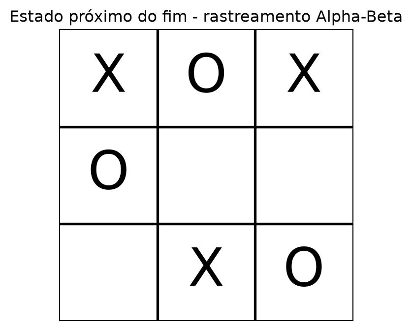
Jogador na raiz: X
Ordem das ações: normal
α inicial: -inf
β inicial: inf
RAIZ/MAX testa ação (1, 1)
Antes da ação: α=-inf, β=inf
MIN(depth=1) entra com α=-inf, β=inf
MIN considera ação (1, 2)
MAX(depth=2) entra com α=-inf, β=inf
MAX considera ação (2, 0)
MIN(depth=3) entra com α=-inf, β=inf
Estado terminal. UTILITY=1
MAX recebeu 1; melhor valor agora é 1
MAX atualiza α: -inf -> 1
MAX retorna 1
MIN recebeu 1; melhor valor agora é 1
MIN atualiza β: inf -> 1
MIN considera ação (2, 0)
MAX(depth=2) entra com α=-inf, β=1
MAX considera ação (1, 2)
MIN(depth=3) entra com α=-inf, β=1
Estado terminal. UTILITY=0
MAX recebeu 0; melhor valor agora é 0
MAX atualiza α: -inf -> 0
MAX retorna 0
MIN recebeu 0; melhor valor agora é 0
MIN atualiza β: 1 -> 0
MIN retorna 0
RAIZ/MAX recebeu 0
RAIZ/MAX atualiza α: -inf -> 0
Melhor ação parcial: (1, 1), valor=0
RAIZ/MAX testa ação (1, 2)
Antes da ação: α=0, β=inf
MIN(depth=1) entra com α=0, β=inf
MIN considera ação (1, 1)
MAX(depth=2) entra com α=0, β=inf
MAX considera ação (2, 0)
MIN(depth=3) entra com α=0, β=inf
Estado terminal. UTILITY=0
MAX recebeu 0; melhor valor agora é 0
MAX retorna 0
MIN recebeu 0; melhor valor agora é 0
PODA em MIN: valor 0 <= α 0
RAIZ/MAX recebeu 0
RAIZ/MAX mantém α=0
Melhor ação parcial: (1, 1), valor=0
RAIZ/MAX testa ação (2, 0)
Antes da ação: α=0, β=inf
MIN(depth=1) entra com α=0, β=inf
MIN considera ação (1, 1)
MAX(depth=2) entra com α=0, β=inf
MAX considera ação (1, 2)
MIN(depth=3) entra com α=0, β=inf
Estado terminal. UTILITY=0
MAX recebeu 0; melhor valor agora é 0
MAX retorna 0
MIN recebeu 0; melhor valor agora é 0
PODA em MIN: valor 0 <= α 0
RAIZ/MAX recebeu 0
RAIZ/MAX mantém α=0
Melhor ação parcial: (1, 1), valor=0
Ação escolhida no rastreamento: (1, 1)
Valor da ação escolhida: 0continued_board = [row[:] for row in trace_board]
print("Aplicando a jogada escolhida no rastreamento:")
print(f"X joga {best_trace_move} (valor minimax={best_trace_value})")
apply_move(continued_board, best_trace_move, "X")
draw_board(continued_board, title="Após a última jogada de X")
current_player = "O"
turn = 2
while not is_terminal(continued_board):
turn_stats = make_search_stats()
move, value = get_best_move_alpha_beta(
continued_board,
player=current_player,
stats=turn_stats,
action_order="normal",
)
print()
print(f"Jogada {turn}: {current_player} escolhe {move} (valor minimax={value})")
print_search_stats(f"Métricas da jogada {turn}", turn_stats)
apply_move(continued_board, move, current_player)
draw_board(continued_board, title=f"Após {current_player} jogar {move}")
current_player = "O" if current_player == "X" else "X"
turn += 1
winner = check_winner(continued_board)
result = "empate" if winner == "Empate" else f"vitória de {winner}"
print()
print(f"Resultado final a partir do rastreamento: {result}")Aplicando a jogada escolhida no rastreamento:
X joga (1, 1) (valor minimax=0)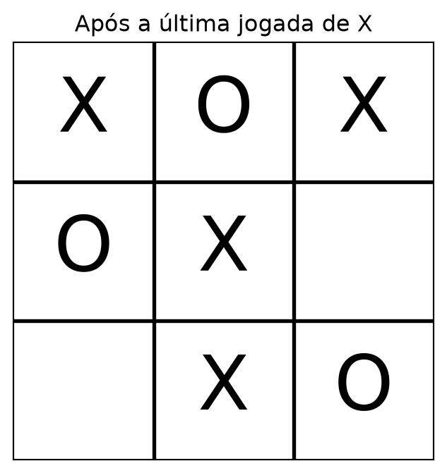
Jogada 2: O escolhe (2, 0) (valor minimax=0)
Métricas da jogada 2: nós=4, testes terminais=4, profundidade máxima=2, podas=0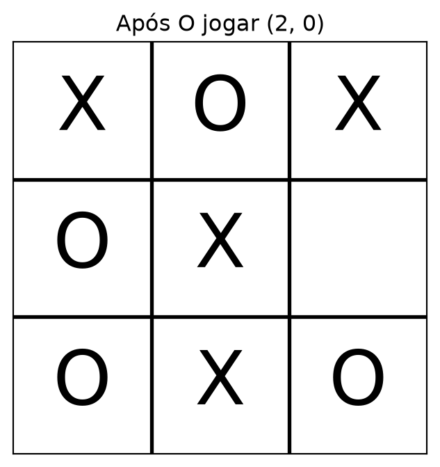
Jogada 3: X escolhe (1, 2) (valor minimax=0)
Métricas da jogada 3: nós=1, testes terminais=1, profundidade máxima=1, podas=0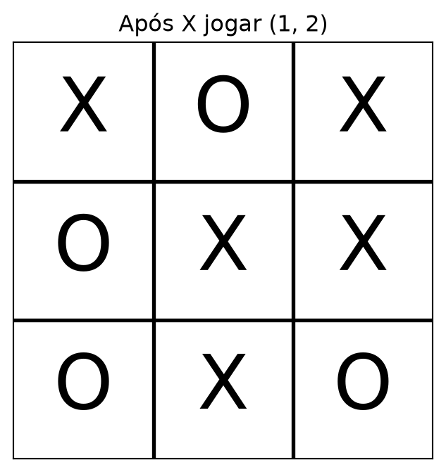
Resultado final a partir do rastreamento: empateBusca Heurística (H-Minimax)
O H-Minimax usa um teste de corte para interromper a busca em uma profundidade fixa. Quando o estado ainda não é terminal, a função evaluate_board estima a utilidade com base nos alinhamentos vencedores do tabuleiro: horizontais, verticais e diagonais.
Simplificando tabuleiro para avaliação
def get_winning_alignments(board):
"""Retorna todos os alinhamentos possíveis de vitória: horizontais, verticais e diagonais."""
alignments = []
# Horizontais
alignments.extend(board)
# Verticais
alignments.extend([[board[row_idx][col_idx] for row_idx in range(3)] for col_idx in range(3)])
# Diagonais
alignments.append([board[0][0], board[1][1], board[2][2]])
alignments.append([board[0][2], board[1][1], board[2][0]])
return alignmentsdef evaluate_alignment(alignment):
"""Avalia um alinhamento possível de vitória do ponto de vista de X (MAX)."""
x_count = alignment.count("X")
o_count = alignment.count("O")
empty_count = alignment.count(None)
if x_count > 0 and o_count > 0:
return 0
if x_count == 2 and empty_count == 1:
return 10
if o_count == 2 and empty_count == 1:
return -10
if x_count == 1 and empty_count == 2:
return 1
if o_count == 1 and empty_count == 2:
return -1
return 0Demonstração
simplified_board = [
['X', 'O', None],
[None, 'X', 'O'],
['X', None, None]
]
draw_board(simplified_board, title="Tabuleiro para análise de alinhamentos")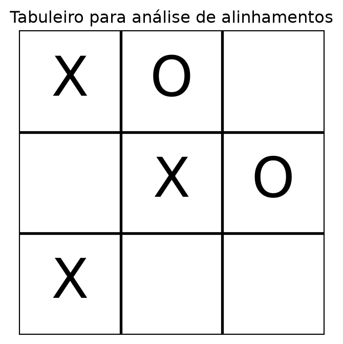
simplified_board = get_winning_alignments(simplified_board)
print(simplified_board)[['X', 'O', None], [None, 'X', 'O'], ['X', None, None], ['X', None, 'X'], ['O', 'X', None], [None, 'O', None], ['X', 'X', None], [None, 'X', 'X']]for alignment in simplified_board:
print(f"Alinhamento {alignment} -> pontuação {evaluate_alignment(alignment)}")Alinhamento ['X', 'O', None] -> pontuação 0
Alinhamento [None, 'X', 'O'] -> pontuação 0
Alinhamento ['X', None, None] -> pontuação 1
Alinhamento ['X', None, 'X'] -> pontuação 10
Alinhamento ['O', 'X', None] -> pontuação 0
Alinhamento [None, 'O', None] -> pontuação -1
Alinhamento ['X', 'X', None] -> pontuação 10
Alinhamento [None, 'X', 'X'] -> pontuação 10A pontuação é calculada sempre do ponto de vista de X (MAX). Alinhamentos promissores para X recebem valores positivos, alinhamentos perigosos para O recebem valores negativos, e alinhamentos bloqueados pelos dois jogadores recebem 0, pois não podem mais formar vitória para nenhum lado. Usamos 10 e -10 para ameaças imediatas com duas marcas e uma casa vazia, e 1 ou -1 para oportunidades ainda fracas.
Função de Avaliação Heurística (EVAL)
def evaluate_board(board):
"""
Estima a utilidade de estados não terminais.
Estados terminais continuam usando UTILITY.
"""
if is_terminal(board):
return utility(board) * 100
return sum(evaluate_alignment(alignment) for alignment in get_winning_alignments(board))Teste de corte
def cutoff_test(board, depth, depth_limit):
"""Interrompe a busca em estado terminal ou no limite de profundidade."""
return is_terminal(board) or depth >= depth_limitFunção do MAX com H-Minimax
def max_value_h_minimax(board, depth, depth_limit, stats=None):
"""Valor heurístico de um estado em turno de MAX."""
update_stats(stats, depth)
register_terminal_test(stats)
if cutoff_test(board, depth, depth_limit):
return evaluate_board(board)
best_value = -math.inf
for action in get_available_actions(board):
apply_move(board, action, "X")
value = min_value_h_minimax(board, depth + 1, depth_limit, stats)
undo_move(board, action)
best_value = max(best_value, value)
return best_valueFunção do MIN com H-Minimax
def min_value_h_minimax(board, depth, depth_limit, stats=None):
"""Valor heurístico de um estado em turno de MIN."""
update_stats(stats, depth)
register_terminal_test(stats)
if cutoff_test(board, depth, depth_limit):
return evaluate_board(board)
best_value = math.inf
for action in get_available_actions(board):
apply_move(board, action, "O")
value = max_value_h_minimax(board, depth + 1, depth_limit, stats)
undo_move(board, action)
best_value = min(best_value, value)
return best_valueFunção de decisão com H-Minimax
def get_best_move_h_minimax(board, player, depth_limit, stats=None):
"""Retorna a melhor jogada usando H-Minimax em profundidade limitada."""
available_actions = get_available_actions(board)
if not available_actions:
return None, evaluate_board(board)
if player == "X":
best_value = -math.inf
best_move = None
for action in available_actions:
apply_move(board, action, "X")
move_value = min_value_h_minimax(board, 1, depth_limit, stats)
undo_move(board, action)
if move_value > best_value:
best_value = move_value
best_move = action
return best_move, best_value
if player == "O":
best_value = math.inf
best_move = None
for action in available_actions:
apply_move(board, action, "O")
move_value = max_value_h_minimax(board, 1, depth_limit, stats)
undo_move(board, action)
if move_value < best_value:
best_value = move_value
best_move = action
return best_move, best_value
raise ValueError("O jogador deve ser 'X' ou 'O'.")Função para simular partida
Nesta etapa final, integramos todos os componentes desenvolvidos para observar o agente em ação. A função de simulação coordena a alternância de turnos (TO-MOVE) e aplica a decisão ótima calculada pelo motor de busca em cada estado. Aqui, validamos se o comportamento baseado em utilidade resulta na estratégia imbatível esperada, permitindo acompanhar o fluxo completo da partida — do estado inicial até o teste terminal (IS-TERMINAL) — e verificar se a IA consegue antecipar as jogadas do oponente para garantir o melhor desfecho possível.
Adaptadores para variantes de Minimax
def minimax_strategy(board, player, stats, depth_limit=None, action_order="normal"):
"""Adaptador para usar Minimax padrão dentro de play_game."""
return get_best_move(board, player, stats)
def alpha_beta_strategy(board, player, stats, depth_limit=None, action_order="normal"):
"""Adaptador para usar Poda Alpha-Beta dentro de play_game."""
return get_best_move_alpha_beta(board, player, stats, action_order)
def h_minimax_strategy(board, player, stats, depth_limit=2, action_order="normal"):
"""Adaptador para usar H-Minimax dentro de play_game."""
return get_best_move_h_minimax(board, player, depth_limit, stats)Registro das variantes de busca
SEARCH_VARIANTS = {
"minimax": {
"label": "Minimax Padrão",
"strategy": minimax_strategy,
},
"alpha_beta": {
"label": "Poda Alpha-Beta",
"strategy": alpha_beta_strategy,
},
"h_minimax": {
"label": "H-Minimax",
"strategy": h_minimax_strategy,
},
}Resumo das métricas da partida
def summarize_history(history):
"""Resume métricas acumuladas de uma partida."""
total_stats = make_search_stats()
for turn in history:
for key in total_stats:
if key == "max_depth":
total_stats[key] = max(total_stats[key], turn["stats"].get(key, 0))
else:
total_stats[key] += turn["stats"].get(key, 0)
return total_statsOrquestrador de partida
def play_game(board=None, player="X", variant="minimax", depth_limit=2, action_order="normal", use_visualization=False):
"""
Orquestra uma partida completa usando uma das variantes do Minimax.
Parâmetros principais:
- variant="minimax": busca exaustiva até estados terminais;
- variant="alpha_beta": busca exaustiva com Poda Alpha-Beta;
- variant="h_minimax": busca heurística com limite de profundidade.
"""
if variant not in SEARCH_VARIANTS:
valid_variants = ", ".join(SEARCH_VARIANTS.keys())
raise ValueError(f"Variante inválida. Use uma destas opções: {valid_variants}")
current_board = create_board() if board is None else copy.deepcopy(board)
current_player = player
turn = 1
history = []
variant_info = SEARCH_VARIANTS[variant]
strategy = variant_info["strategy"]
variant_label = variant_info["label"]
player_labels = {
"X": "X (MAX)",
"O": "O (MIN)",
}
print(f"Iniciando partida com {variant_label} (X = MAX, O = MIN):")
if variant == "h_minimax":
print(f"Limite de profundidade: {depth_limit}")
if variant == "alpha_beta":
print(f"Ordem das ações: {action_order}")
if use_visualization:
draw_board(current_board, title="Estado inicial")
while not is_terminal(current_board):
player_label = player_labels[current_player]
turn_stats = make_search_stats()
move, move_value = strategy(current_board, current_player, turn_stats, depth_limit, action_order)
print(f"Turno {turn} - {player_label}")
print(f"Ação escolhida: {move}")
print(f"Valor da ação: {move_value}")
print_search_stats("Métricas da busca", turn_stats)
apply_move(current_board, move, current_player)
history.append({
"turn": turn,
"player": current_player,
"move": move,
"value": move_value,
"stats": turn_stats,
"board": copy.deepcopy(current_board),
})
if use_visualization:
draw_board(current_board, title=f"{variant_label} - turno {turn}: {player_label}")
current_player = "O" if current_player == "X" else "X"
turn += 1
winner = check_winner(current_board)
if winner == "X":
print("Fim de jogo: X (MAX) venceu")
elif winner == "O":
print("Fim de jogo: O (MIN) venceu")
else:
print("Fim de jogo: Empate")
total_stats = summarize_history(history)
print_search_stats("Métricas acumuladas da partida", total_stats)
return current_board, winner, historyExemplo prático
Cenário 1 - Minimax Padrão (Busca Exaustiva)
No Cenário 1, aplicamos tudo o que foi construído em uma simulação prática de partida completa. O objetivo é observar o comportamento dos agentes em tempo real, visualizando como a IA decide cada movimento a partir de um estado específico. Este cenário permite testar a eficácia da árvore de jogo e verificar se o algoritmo consegue garantir resultados ótimos (como o empate forçado no Jogo da Velha), demonstrando a transição de um agente baseado em objetivos para um agente baseado em utilidade.
final_board_minimax, winner_minimax, history_minimax = play_game(
board=create_board(),
player="X",
variant="minimax",
use_visualization=True,
)
print(f"Resultado final do Cenário 1: {winner_minimax}")Iniciando partida com Minimax Padrão (X = MAX, O = MIN):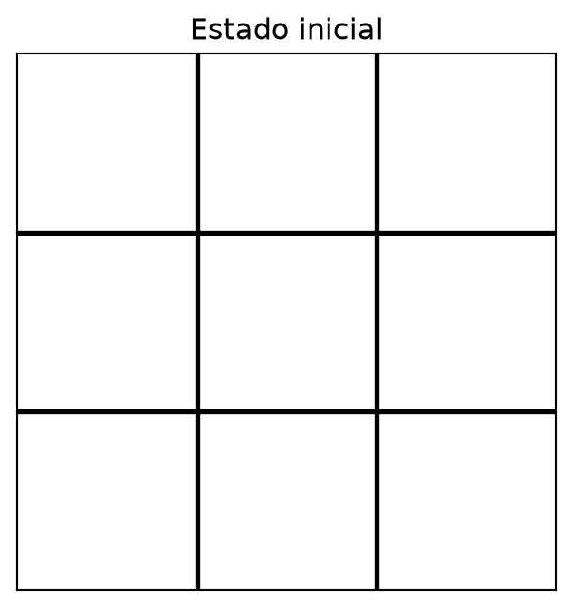
Turno 1 - X (MAX)
Ação escolhida: (0, 0)
Valor da ação: 0
Métricas da busca: nós=549945, testes terminais=549945, profundidade máxima=9, podas=0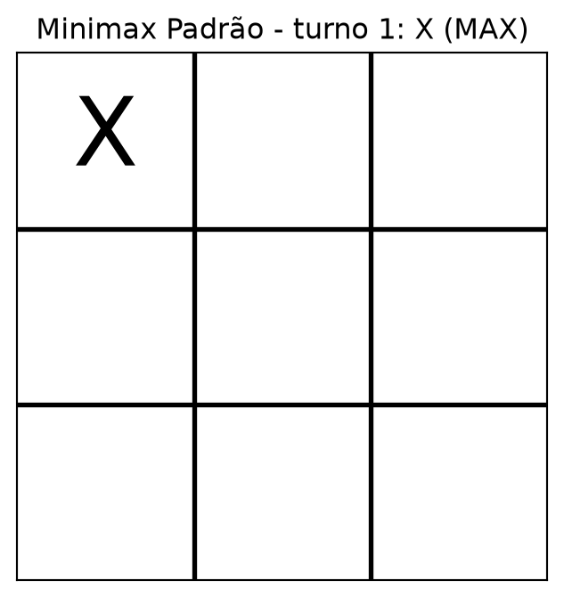
Turno 2 - O (MIN)
Ação escolhida: (1, 1)
Valor da ação: 0
Métricas da busca: nós=59704, testes terminais=59704, profundidade máxima=8, podas=0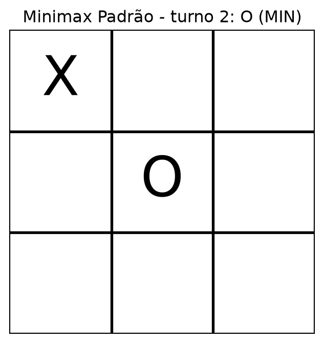
Turno 3 - X (MAX)
Ação escolhida: (0, 1)
Valor da ação: 0
Métricas da busca: nós=7331, testes terminais=7331, profundidade máxima=7, podas=0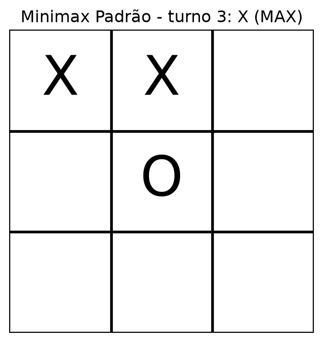
Turno 4 - O (MIN)
Ação escolhida: (0, 2)
Valor da ação: 0
Métricas da busca: nós=934, testes terminais=934, profundidade máxima=6, podas=0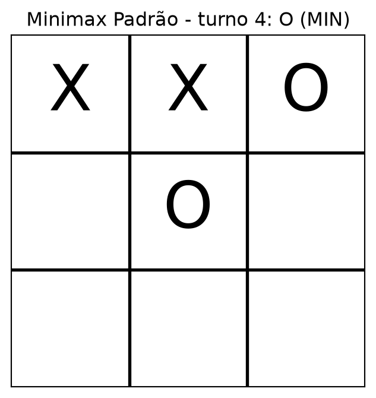
Turno 5 - X (MAX)
Ação escolhida: (2, 0)
Valor da ação: 0
Métricas da busca: nós=197, testes terminais=197, profundidade máxima=5, podas=0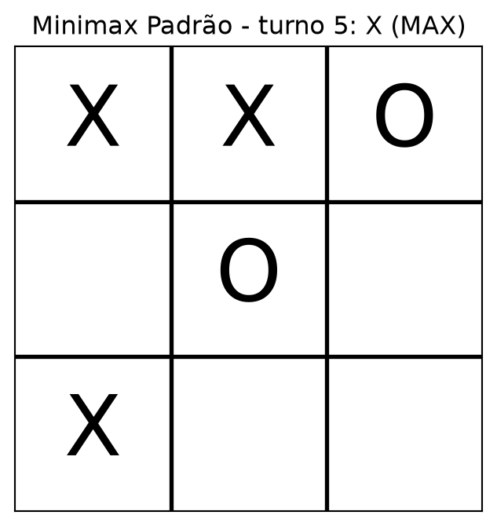
Turno 6 - O (MIN)
Ação escolhida: (1, 0)
Valor da ação: 0
Métricas da busca: nós=46, testes terminais=46, profundidade máxima=4, podas=0Turno 7 - X (MAX)
Ação escolhida: (1, 2)
Valor da ação: 0
Métricas da busca: nós=13, testes terminais=13, profundidade máxima=3, podas=0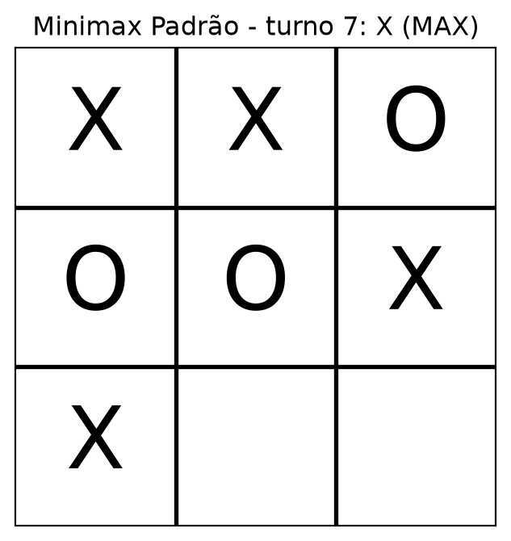
Turno 8 - O (MIN)
Ação escolhida: (2, 1)
Valor da ação: 0
Métricas da busca: nós=4, testes terminais=4, profundidade máxima=2, podas=0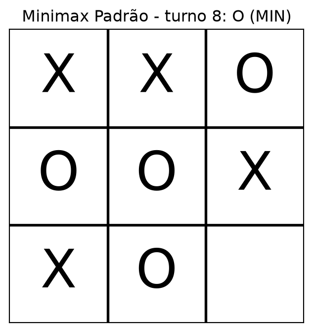
Turno 9 - X (MAX)
Ação escolhida: (2, 2)
Valor da ação: 0
Métricas da busca: nós=1, testes terminais=1, profundidade máxima=1, podas=0Fim de jogo: Empate
Métricas acumuladas da partida: nós=618175, testes terminais=618175, profundidade máxima=9, podas=0
Resultado final do Cenário 1: EmpatePor que o Minimax padrão consegue garantir empate no Jogo da Velha quando os dois jogadores usam a mesma estratégia ótima?
Porque ele explora a árvore de jogo até estados terminais e escolhe ações assumindo que o adversário também responderá da melhor forma possível. No Jogo da Velha, esse raciocínio completo leva ao empate quando ambos jogam perfeitamente.
Cenário 2 - Otimização com Poda Alpha-Beta
No Cenário 2, mantemos a mesma decisão ótima do Minimax, mas evitamos explorar ramos que não podem alterar a escolha feita na raiz. Os parâmetros α e β guardam, respectivamente, o melhor valor já garantido por MAX e o melhor valor já garantido por MIN. Quando um ramo não consegue melhorar a decisão de quem já tem uma alternativa melhor, ele é podado.
final_board_alpha_beta, winner_alpha_beta, history_alpha_beta = play_game(
board=create_board(),
player="X",
variant="alpha_beta",
use_visualization=True,
)
print(f"Resultado final do Cenário 2: {winner_alpha_beta}")Iniciando partida com Poda Alpha-Beta (X = MAX, O = MIN):
Ordem das ações: normal
Turno 1 - X (MAX)
Ação escolhida: (0, 0)
Valor da ação: 0
Métricas da busca: nós=18296, testes terminais=18296, profundidade máxima=9, podas=8180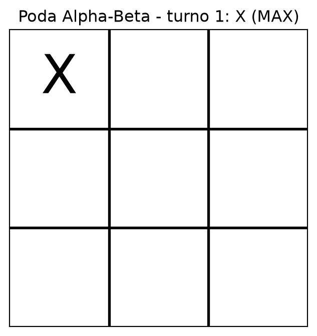
Turno 2 - O (MIN)
Ação escolhida: (1, 1)
Valor da ação: 0
Métricas da busca: nós=2337, testes terminais=2337, profundidade máxima=8, podas=1014Turno 3 - X (MAX)
Ação escolhida: (0, 1)
Valor da ação: 0
Métricas da busca: nós=843, testes terminais=843, profundidade máxima=7, podas=344Turno 4 - O (MIN)
Ação escolhida: (0, 2)
Valor da ação: 0
Métricas da busca: nós=74, testes terminais=74, profundidade máxima=6, podas=29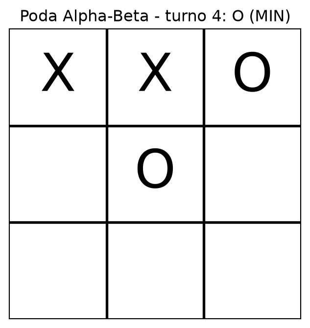
Turno 5 - X (MAX)
Ação escolhida: (2, 0)
Valor da ação: 0
Métricas da busca: nós=63, testes terminais=63, profundidade máxima=5, podas=24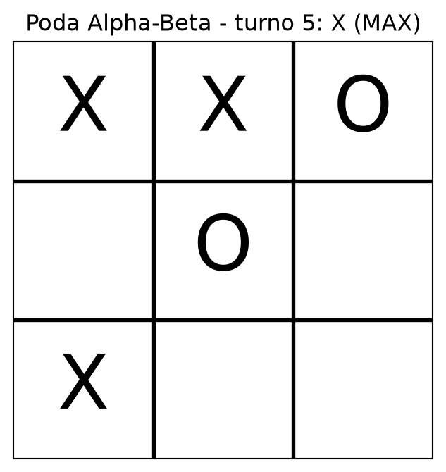
Turno 6 - O (MIN)
Ação escolhida: (1, 0)
Valor da ação: 0
Métricas da busca: nós=16, testes terminais=16, profundidade máxima=4, podas=6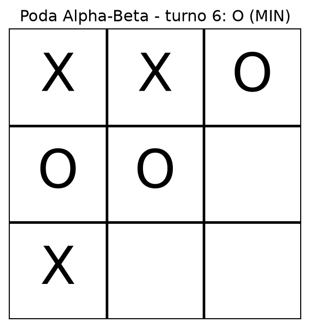
Turno 7 - X (MAX)
Ação escolhida: (1, 2)
Valor da ação: 0
Métricas da busca: nós=9, testes terminais=9, profundidade máxima=3, podas=3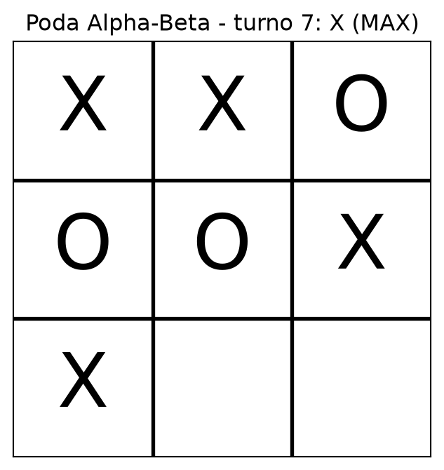
Turno 8 - O (MIN)
Ação escolhida: (2, 1)
Valor da ação: 0
Métricas da busca: nós=4, testes terminais=4, profundidade máxima=2, podas=1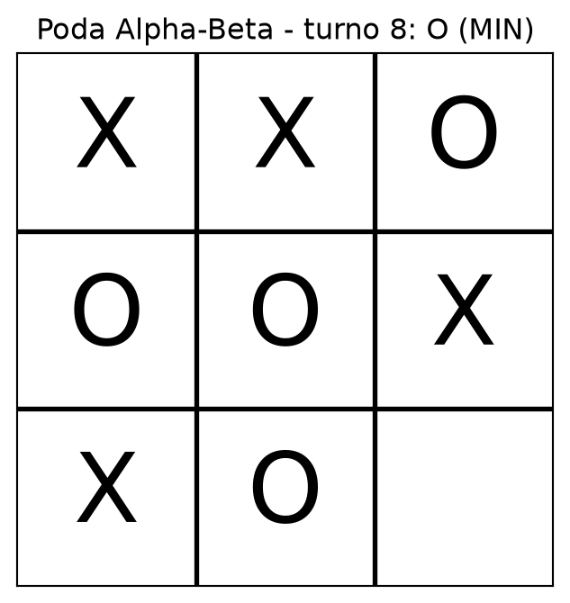
Turno 9 - X (MAX)
Ação escolhida: (2, 2)
Valor da ação: 0
Métricas da busca: nós=1, testes terminais=1, profundidade máxima=1, podas=0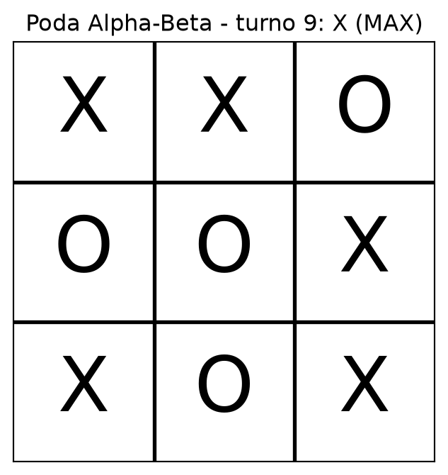
Fim de jogo: Empate
Métricas acumuladas da partida: nós=21643, testes terminais=21643, profundidade máxima=9, podas=9601
Resultado final do Cenário 2: EmpatePor que uma poda é considerada segura?
Porque o algoritmo já encontrou uma alternativa melhor para um jogador anterior na árvore. Assim, aquele ramo não será escolhido por um jogador racional.
Cenário 3 - Poda Alpha-Beta com ordem reversa
Neste cenário, mantemos a Poda Alpha-Beta, mas avaliamos as ações legais na ordem inversa. O objetivo é observar que a ordem de exploração pode alterar a quantidade de nós visitados e podas realizadas, mesmo quando a lógica da decisão ótima continua a mesma.
final_board_alpha_beta_reverse, winner_alpha_beta_reverse, history_alpha_beta_reverse = play_game(
board=create_board(),
player="X",
variant="alpha_beta",
action_order="reversa",
use_visualization=False,
)
reverse_stats = summarize_history(history_alpha_beta_reverse)
print(f"Resultado final do Cenário 3: {winner_alpha_beta_reverse}")
print_search_stats("Métricas com ordem reversa", reverse_stats)Iniciando partida com Poda Alpha-Beta (X = MAX, O = MIN):
Ordem das ações: reversa
Turno 1 - X (MAX)
Ação escolhida: (2, 2)
Valor da ação: 0
Métricas da busca: nós=18296, testes terminais=18296, profundidade máxima=9, podas=8180
Turno 2 - O (MIN)
Ação escolhida: (1, 1)
Valor da ação: 0
Métricas da busca: nós=2337, testes terminais=2337, profundidade máxima=8, podas=1014
Turno 3 - X (MAX)
Ação escolhida: (2, 1)
Valor da ação: 0
Métricas da busca: nós=843, testes terminais=843, profundidade máxima=7, podas=344
Turno 4 - O (MIN)
Ação escolhida: (2, 0)
Valor da ação: 0
Métricas da busca: nós=74, testes terminais=74, profundidade máxima=6, podas=29
Turno 5 - X (MAX)
Ação escolhida: (0, 2)
Valor da ação: 0
Métricas da busca: nós=63, testes terminais=63, profundidade máxima=5, podas=24
Turno 6 - O (MIN)
Ação escolhida: (1, 2)
Valor da ação: 0
Métricas da busca: nós=16, testes terminais=16, profundidade máxima=4, podas=6
Turno 7 - X (MAX)
Ação escolhida: (1, 0)
Valor da ação: 0
Métricas da busca: nós=9, testes terminais=9, profundidade máxima=3, podas=3
Turno 8 - O (MIN)
Ação escolhida: (0, 1)
Valor da ação: 0
Métricas da busca: nós=4, testes terminais=4, profundidade máxima=2, podas=1
Turno 9 - X (MAX)
Ação escolhida: (0, 0)
Valor da ação: 0
Métricas da busca: nós=1, testes terminais=1, profundidade máxima=1, podas=0
Fim de jogo: Empate
Métricas acumuladas da partida: nós=21643, testes terminais=21643, profundidade máxima=9, podas=9601
Resultado final do Cenário 3: Empate
Métricas com ordem reversa: nós=21643, testes terminais=21643, profundidade máxima=9, podas=9601Por que a ordem reversa pode alterar o número de podas?
A Poda Alpha-Beta depende dos limites α e β acumulados durante a busca. Se a ordem reversa encontrar boas alternativas mais cedo ou mais tarde que a ordem normal, esses limites serão atualizados em momentos diferentes, alterando a quantidade de ramos descartados.
Cenário 4 - Poda Alpha-Beta com ordem embaralhada
Neste cenário, avaliamos as ações em ordem embaralhada. Usamos uma semente fixa para que o experimento seja reprodutível e os alunos possam comparar os resultados entre execuções.
#random.seed("alpha-beta-ordem")
final_board_alpha_beta_random, winner_alpha_beta_random, history_alpha_beta_random = play_game(
board=create_board(),
player="X",
variant="alpha_beta",
action_order="embaralhada",
use_visualization=False,
)
random_stats = summarize_history(history_alpha_beta_random)
print(f"Resultado final do Cenário 4: {winner_alpha_beta_random}")
print_search_stats("Métricas com ordem embaralhada", random_stats)Iniciando partida com Poda Alpha-Beta (X = MAX, O = MIN):
Ordem das ações: embaralhada
Turno 1 - X (MAX)
Ação escolhida: (0, 1)
Valor da ação: 0
Métricas da busca: nós=17269, testes terminais=17269, profundidade máxima=9, podas=7639
Turno 2 - O (MIN)
Ação escolhida: (0, 0)
Valor da ação: 0
Métricas da busca: nós=2899, testes terminais=2899, profundidade máxima=8, podas=1274
Turno 3 - X (MAX)
Ação escolhida: (1, 0)
Valor da ação: 0
Métricas da busca: nós=1366, testes terminais=1366, profundidade máxima=7, podas=548
Turno 4 - O (MIN)
Ação escolhida: (1, 1)
Valor da ação: 0
Métricas da busca: nós=352, testes terminais=352, profundidade máxima=6, podas=139
Turno 5 - X (MAX)
Ação escolhida: (2, 2)
Valor da ação: 0
Métricas da busca: nós=91, testes terminais=91, profundidade máxima=5, podas=30
Turno 6 - O (MIN)
Ação escolhida: (2, 0)
Valor da ação: 0
Métricas da busca: nós=32, testes terminais=32, profundidade máxima=4, podas=10
Turno 7 - X (MAX)
Ação escolhida: (0, 2)
Valor da ação: 0
Métricas da busca: nós=10, testes terminais=10, profundidade máxima=3, podas=2
Turno 8 - O (MIN)
Ação escolhida: (1, 2)
Valor da ação: 0
Métricas da busca: nós=4, testes terminais=4, profundidade máxima=2, podas=1
Turno 9 - X (MAX)
Ação escolhida: (2, 1)
Valor da ação: 0
Métricas da busca: nós=1, testes terminais=1, profundidade máxima=1, podas=0
Fim de jogo: Empate
Métricas acumuladas da partida: nós=22024, testes terminais=22024, profundidade máxima=9, podas=9643
Resultado final do Cenário 4: Empate
Métricas com ordem embaralhada: nós=22024, testes terminais=22024, profundidade máxima=9, podas=9643
Por que usamos random.seed antes da ordem embaralhada?
A ordem embaralhada depende de aleatoriedade. A semente fixa permite reproduzir a mesma sequência de ações em execuções diferentes, tornando a comparação mais justa e verificável.
Cenário 5 - Busca Heurística (H-Minimax)
No Cenário 5, interrompemos a busca antes de chegar obrigatoriamente ao fim da partida. Quando o limite de profundidade é atingido, usamos uma função de avaliação (EVAL) para estimar a utilidade do estado. Essa aproximação permite trabalhar com jogos maiores, mas pode produzir decisões ruins quando uma ameaça importante aparece logo depois do limite de busca, fenômeno conhecido como efeito horizonte.
horizon_board = [
["X", None, None],
[None, "O", None],
[None, None, "X"],
]
final_board_h_minimax, winner_h_minimax, history_h_minimax = play_game(
board=horizon_board,
player="O",
variant="h_minimax",
depth_limit=2,
use_visualization=True,
)Iniciando partida com H-Minimax (X = MAX, O = MIN):
Limite de profundidade: 2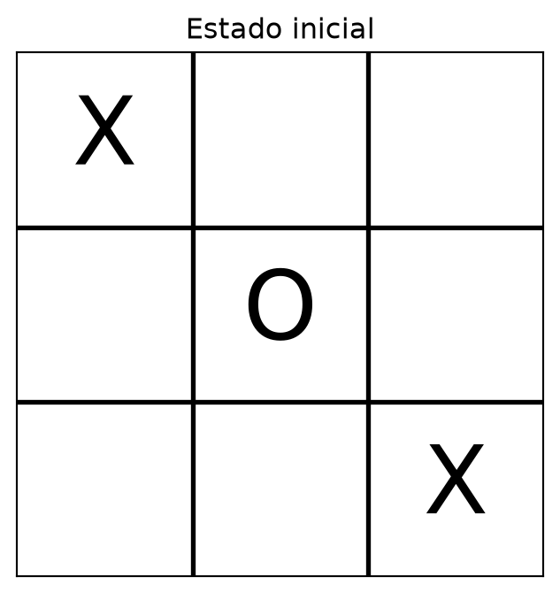
Turno 1 - O (MIN)
Ação escolhida: (0, 1)
Valor da ação: 10
Métricas da busca: nós=36, testes terminais=36, profundidade máxima=2, podas=0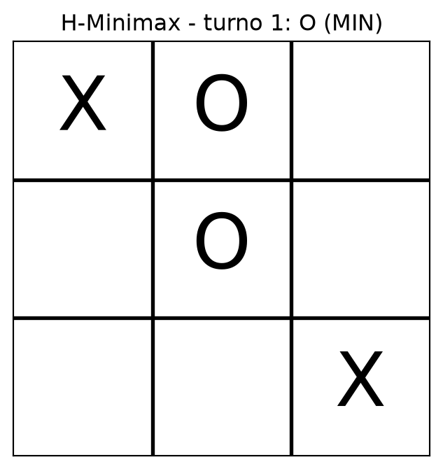
Turno 2 - X (MAX)
Ação escolhida: (2, 1)
Valor da ação: -10
Métricas da busca: nós=25, testes terminais=25, profundidade máxima=2, podas=0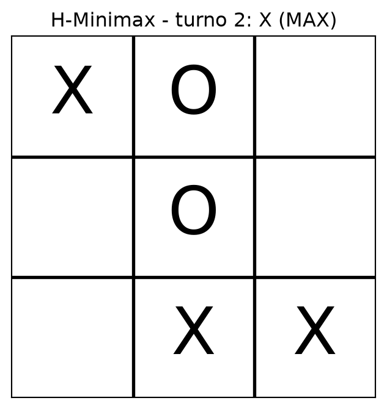
Turno 3 - O (MIN)
Ação escolhida: (2, 0)
Valor da ação: 9
Métricas da busca: nós=16, testes terminais=16, profundidade máxima=2, podas=0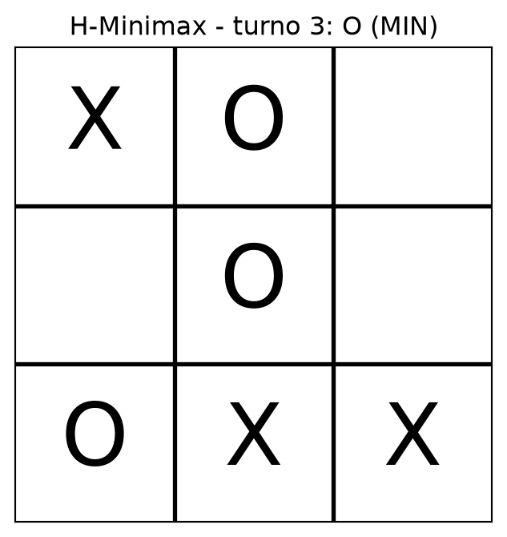
Turno 4 - X (MAX)
Ação escolhida: (0, 2)
Valor da ação: -10
Métricas da busca: nós=9, testes terminais=9, profundidade máxima=2, podas=0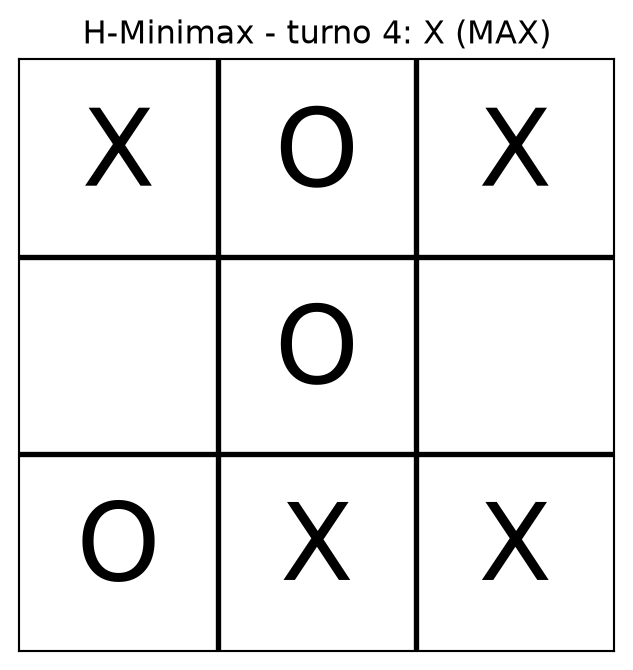
Turno 5 - O (MIN)
Ação escolhida: (1, 2)
Valor da ação: 0
Métricas da busca: nós=4, testes terminais=4, profundidade máxima=2, podas=0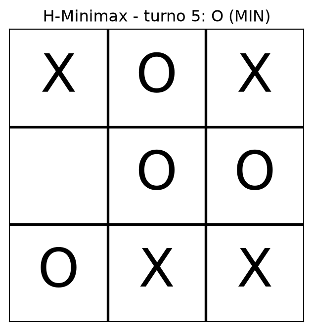
Turno 6 - X (MAX)
Ação escolhida: (1, 0)
Valor da ação: 0
Métricas da busca: nós=1, testes terminais=1, profundidade máxima=1, podas=0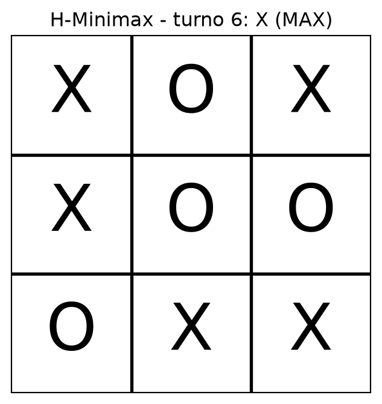
Fim de jogo: Empate
Métricas acumuladas da partida: nós=91, testes terminais=91, profundidade máxima=2, podas=0Por que o H-Minimax pode tomar uma decisão pior que o Minimax exaustivo?
O H-Minimax pode tomar decisões piores que o Minimax exaustivo porque ele não explora a árvore de jogo até os estados terminais, utilizando, em vez disso, um teste de corte e uma função de avaliação heurística (EVAL) que funciona apenas como uma estimativa falível das chances de vitória. Essa limitação de profundidade torna o algoritmo vulnerável ao “Efeito Horizonte”, um fenômeno em que o agente enfrenta uma ameaça inevitável e prejudicial, mas escolhe movimentos que apenas a adiam temporariamente, “empurrando” o dano para além do limite de busca da IA. Diferente do Minimax exaustivo, que identifica a utilidade real e absoluta do fim da partida, o H-Minimax pode ser induzido a realizar sacrifícios inúteis de recursos na crença errônea de que salvou sua posição, quando na verdade apenas ocultou momentaneamente o desfecho negativo de seu horizonte de visão limitado.
A função EVAL precisa ser perfeita?
Não. Ela é uma aproximação. Porém, quanto melhor ela representar oportunidades e ameaças reais do jogo, melhores tendem a ser as decisões do agente.
Desafios
Ajustando a heurística: Altere a função evaluate_alignment para valorizar também o controle do centro do tabuleiro. Em seguida, execute novamente o Cenário 5 e observe se a escolha do H-Minimax muda.
Sugestões para investigação:
- Adicione um pequeno bônus quando
board[1][1] == "X". - Adicione uma pequena penalização quando
board[1][1] == "O". - Compare os resultados com
depth_limit=1,depth_limit=2edepth_limit=3. - Explique se a mudança melhorou, piorou ou apenas alterou o comportamento do agente.
Key Takeaways
- O Minimax padrão busca até estados terminais e, no Jogo da Velha, permite observar o empate forçado quando ambos os agentes jogam de forma ótima.
- A Poda Alpha-Beta preserva a mesma decisão ótima do Minimax, mas reduz o número de nós avaliados ao descartar ramos que não podem melhorar a decisão na raiz.
- O H-Minimax troca completude por viabilidade: usa limite de profundidade e uma função
EVAL, permitindo buscas mais baratas, mas ficando sujeito ao efeito horizonte.
Referências
- Russell, S. & Norvig, P. (2010). Artificial Intelligence: A Modern Approach. Prentice Hall.
- https://www.geeksforgeeks.org/dsa/finding-optimal-move-in-tic-tac-toe-using-minimax-algorithm-in-game-theory/
- https://alphabetademo.netlify.app/
- https://www.youtube.com/watch?v=zp3VMe0Jpf8